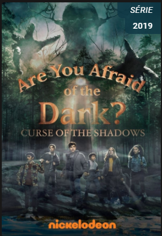
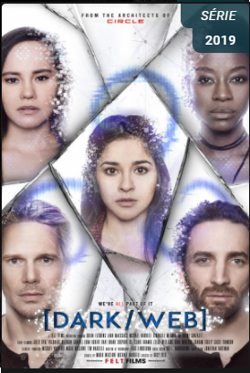
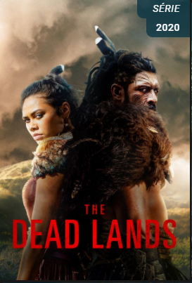

HOME
Séries:
Comédia
Ficção
Terror
Filmes:
Comédia
Ficção
Terror
Cadastro
Página de Séries (Terror):
Marianne
Marianne
Assista ao Trailer de Marianne
Clube do Terror

Clube do Terror
Assista ao Trailer de Clube do Terror
DarkWeb

DarkWeb
Assista ao Trailer de DarkWeb
Terror no Pantano

The Dead Lands
Assista ao Trailer de Terror no Pântano
Quer saber mais sobre a SoulCode?
Clique aqui: Site Oficial Soulcode
Linkedin SoulCode Academy
Facebook SoulCode Academy
Instagram @soulcodeacademy
 Marianne
Marianne